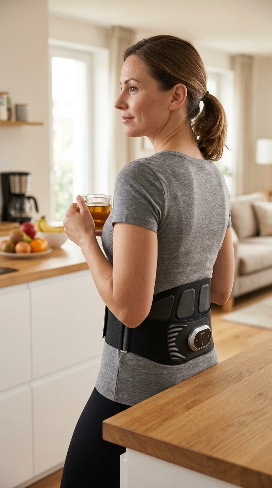

Du kennst das Gefühl.
Morgens aufwachen und kurz warten, bevor du dich bewegst. Erst mal spüren, wie schlimm es heute wird. Ob du dich aufrecht hinsetzen kannst ohne dieses Ziehen. Ob du die Treppe normal runtergehst oder dich am Geländer festhältst.
Du hast die Übungen gemacht. Die vom Physiotherapeuten, die aus YouTube, die aus dem Rückenkurs in der Volkshochschule. Du hast Wärmepflaster geklebt, Ibuprofen geschluckt, eine neue Matratze gekauft. Vielleicht sogar eine zweite Physiotherapie-Reihe beantragt.
Und wenn jemand fragt, sagst du: „Ach, mein Rücken ist halt nicht mehr der Beste."
Als wäre es normal. Als wäre es einfach so.
Ich habe das 4 Jahre lang gesagt.
Ich bin Lehrerin, 52 Jahre alt, und Rückenschmerzen gehörten zu meinem Alltag wie der Morgenkaffee. Sechs Stunden stehen, dann Korrekturen am Schreibtisch. Abends auf der Couch, weil nichts anderes mehr ging. Wochenenden, an denen ich abwog: Gehe ich mit meiner Enkelin in den Park, oder schone ich mich, damit die Arbeitswoche nicht zur Katastrophe wird?
Ich habe mich für die Arbeitswoche entschieden. Öfter als ich zugeben möchte.
Das Schlimmste war nicht der Schmerz. Der Schmerz war fast schon vertraut. Das Schlimmste war dieser Moment, wenn meine Enkelin Lena fragte ob wir zusammen auf den Spielplatz gehen. Und ich innerlich schon wusste, was die Antwort sein musste. Und wie sie schaute, wenn ich Nein sagte.
Ich war 52. Keine alte Frau. Aber ich lebte wie eine.
Dann stieß ich über eine Studie, die alles in Frage stellte, was ich über Rückenschmerzen zu wissen glaubte. Und ich stieß auf ein Gerät, das Christian Senfleben auf Basis seiner sportwissenschaftlichen Forschung an der Deutschen Sporthochschule Köln entwickelt hat und das ich, ehrlich gesagt, zunächst für kompletten Unsinn hielt.
Was ich seitdem gelernt habe, möchte ich dir heute erzählen. Nicht weil ich Produkte empfehle. Sondern weil ich 4 Jahre meines Lebens damit verbracht habe, an der falschen Stelle zu suchen. Und weil ich nicht möchte, dass du das auch tust.
Denn wenn du Übungen machst, zur Physiotherapie gehst, Schmerzmittel nimmst und trotzdem nicht besser wirst, dann liegt es mit großer Wahrscheinlichkeit nicht an deiner Disziplin. Es liegt daran, dass niemand dir erklärt hat, was in deinem Rücken wirklich passiert.

Das Rückenübungs-Paradox: Warum du alles richtig machst und trotzdem nicht besser wirst
Lass mich dir etwas erklären, das die Physiotherapie-Branche nicht gerne laut ausspricht.
Rückenübungen trainieren die Muskeln, die du bewusst anspannen kannst. Die Muskeln, die reagieren, wenn du eine Brücke machst, wenn du Crunches machst, wenn du die Übungen aus dem Kurs machst. Die Muskeln, die nah an der Oberfläche liegen und auf Befehle hören.
Aber die Muskeln, die deinen Rücken wirklich stabilisieren, liegen tiefer. Und die sind wirklich schwer zu trainieren. Du kannst sie nicht bewusst anspannen. Du kannst sie mit normalen Übungen nicht direkt erreichen. Sie arbeiten automatisch, im Hintergrund, ohne dass du es merkst.
Oder sie arbeiten eben nicht mehr.
Christian Senfleben, Sportwissenschaftler (M.Sc., Deutsche Sporthochschule Köln) und Gründer von Wellenpuls, hat in seiner Forschung herausgefunden was viele Rückenschmerzpatienten ihr Leben lang nicht erfahren: Bei Menschen mit chronischen Rückenschmerzen sind genau diese tiefliegenden Muskeln signifikant atrophiert, also geschwächt. Das ist kein medizinisches Detail am Rande. Das ist oft die Ursache.
Diese Muskeln sind nicht einfach schwach. Sie sind so weit zurückgebildet, dass das Nervensystem sie kaum noch richtig ansteuert. Der Körper hat ihre Aufgabe an andere Strukturen ausgelagert. An Muskeln, die diese Aufgabe nicht übernehmen können, ohne selbst zu verkrampfen. An Bandscheiben, die dadurch unter Dauerdruck stehen. An eine Wirbelsäule, die ohne ihr natürliches Muskelkorsett arbeiten muss.
Du kannst also jeden Morgen deine Übungen machen. Du kannst zweimal die Woche zur Physiotherapie gehen. Du kannst dehnen, stärken, mobilisieren. Solange diese tiefliegenden Muskeln nicht direkt aktiviert werden, arbeitest du an der Oberfläche eines Problems, das in der Tiefe sitzt.
Das zweite Problem: Warum Schmerz den Teufelskreis selbst aufrechterhält
Aber es kommt noch schlimmer. Und das hat mich, als ich es das erste Mal las, wirklich getroffen.
Wenn der Rücken schmerzt, reagiert dein Körper mit einem uralten Schutzmechanismus. Die oberflächlichen Muskeln rund um die schmerzende Stelle verspannen sich. Sie bilden eine Art natürliches Korsett und versuchen zu kompensieren, was eigentlich die tiefliegende Muskulatur machen sollte.
Das klingt sinnvoll. Und kurzfristig ist es das auch.
Aber was dabei langfristig passiert, ist fatal: Weil die oberflächlichen Muskeln die Stabilisierung übernehmen, werden die tiefen Stabilisierungsmuskeln noch weniger gebraucht. Der Körper spart Energie, lagert die Aufgabe aus, reduziert die Aktivität in der Tiefenmuskulatur weiter. Die Muskeln, die eigentlich gebraucht werden, schwinden noch mehr. Die oberflächlichen Muskeln verspannen sich noch stärker, um zu kompensieren.
Dieser Kreislauf dreht sich, oft über Jahre, manchmal über Jahrzehnte. Und jede Übung, jede Physiotherapie, jede Wärmeanwendung kann den Schmerz vorübergehend lindern. Aber keiner dieser Ansätze durchbricht den Kreislauf an seiner eigentlichen Stelle.
Das erklärt, warum so viele Menschen über 45 nach jahrelangen Bemühungen sagen: „Es wird kurz besser, aber dann kommt es immer wieder." Nicht weil sie zu wenig tun. Sondern weil das, was sie tun, die eigentliche Ursache nicht erreicht.
Als ich das verstand, war meine erste Reaktion keine Erleichterung. Es war Wut. Vier Jahre Physiotherapie. Hunderte, wenn nicht sogar Tausende von Euro. Unzählige Morgen mit Übungen, während meine Familie noch schlief. Und niemand hatte mir je erklärt, dass ich an der falschen Stelle ansetze.

Die Lösung, die aus der Forschung kam: Was neuromuskuläre Elektrostimulation mit deiner Tiefenmuskulatur macht
Bei meiner Recherche stieß ich auf etwas, das ich zunächst skeptisch betrachtete.
In der Medizin gibt es seit Jahrzehnten eine Methode namens neuromuskuläre Elektrostimulation, kurz NMES. Sie wird in Kliniken und Reha-Zentren eingesetzt, nach Operationen, nach Schlaganfällen, bei Muskelschwund nach langer Bettruhe. Das Prinzip ist simpel: Elektrische Impulse stimulieren Muskeln direkt über Elektroden auf der Haut und lösen eine Kontraktion aus, ganz ohne dass der Patient sich aktiv bewegt.
Anders als TENS, das viele kennen und das lediglich Schmerzsignale überlagert, erzeugt NMES eine echte Muskelkontraktion. Echtes Training. Echter Muskelstärkung.
Aber hier war das Problem, das Christian Senfleben bei seiner Forschung erkannte: Es gab kein Gerät auf dem Markt, das NMES gezielt für die tiefliegende Rumpfmuskulatur im LWS-Bereich entwickelt hatte. Die vorhandenen Geräte waren zu allgemein, falsch positioniert, nicht auf die spezifische Anatomie des unteren Rückens abgestimmt.
Also entwickelte er es selbst.
Was folgte, war eine randomisierte kontrollierte Studie, der höchste Standard in der medizinischen Forschung, mit Teilnehmern, die unter chronischen Rückenschmerzen litten. Das Ergebnis war so überzeugend, dass Senfleben beschloss, das Gerät auf den Markt zu bringen. Nicht als Gadget. Als ernstzunehmendes Trainingsgerät, das aus echter Wissenschaft entstanden ist.
Das Gerät heißt Wellenpuls LWS.
Was der Wellenpuls LWS anders macht als alles, was du bisher versucht hast
Als ich zum ersten Mal von Wellenpuls hörte, war meine Reaktion ehrlich gesagt: Schon wieder so ein Rücken-Gadget.
Ich hatte bereits eine Massagepistole, die nach drei Wochen im Schrank verschwand. Eine Akupressurmatte, die sich gut anfühlte aber nichts veränderte. Eine Infrarotlampe, die meine Physiotherapeutin empfohlen hatte und die den Schmerz für ein paar Stunden linderte, mehr nicht.
Ich war es leid, Hoffnung in Dinge zu investieren, die vielleicht die Symptome ansprachen aber nie die Ursache.
Aber dann las ich, wie der Wellenpuls LWS funktioniert. Und zum ersten Mal seit Jahren ergab etwas wirklich Sinn.
Der Wellenpuls LWS ist kein Massagegerät. Er ist kein Wärmekissen. Er ist auch kein normales EMS-Gerät wie man es aus dem Fitnessstudio kennt.
Er ist ein Trainingsgerät, das speziell entwickelt wurde, um genau die Muskeln zu erreichen, die man mit normalen Training kaum erreicht. Die tiefliegenden Stabilisierungsmuskeln des unteren Rückens. Die Muskeln, die seit Jahren, vielleicht Jahrzehnten, kaum noch arbeiten.
Der Gurt wird um die Körpermitte angelegt. Die integrierten Elektroden senden präzise neuromuskuläre Impulse über die Haut an die Muskulatur. Nicht nur an die Oberfläche. Bis in die Tiefe. Der Körper reagiert mit echten Muskelkontraktionen, genauso wie beim Training, nur ohne dass du dich aktiv bewegen musst, ohne dass du eine bestimmte Position einnehmen musst, ohne dass dein Nervensystem die richtigen Signale selbst senden muss.
Der Unterschied zu TENS, das viele bereits kennen, ist entscheidend. TENS überlagert Schmerzsignale. Es fühlt sich gut an, aber es verändert nichts an der Muskulatur. Der Wellenpuls LWS hingegen trainiert aktiv. Er stärkt die Muskulatur. Er reaktiviert Muskeln, die das Nervensystem längst abgehängt hatte.
— Arno van Vonderen, Diplom-Gesundheitswissenschaftler und Physiotherapeut
Das ist kein Marketing-Zitat einer bezahlten Kundenstimme. Das ist die Einschätzung eines Fachmanns, der täglich Rückenschmerzpatienten behandelt und der weiß, woran bisherige Lösungen scheitern.
Und das Protokoll aus der Studie ist so simpel, dass ich beim ersten Lesen dachte, ich hätte etwas übersehen: Zweimal pro Woche, zwanzig Minuten. Das war es.
Mein erster Gedanke: Das kann nicht reichen
Zweimal die Woche, zwanzig Minuten. Ich habe früher täglich geübt. Jeden Morgen, bevor die Familie aufwachte. Und das sollte in weniger Zeit mehr bewirken?
Ich verstehe diesen Gedanken, weil ich ihn selbst hatte.
Aber der Unterschied liegt nicht in der Menge. Er liegt in der Tiefe.
Zwanzig Minuten, in denen die Tiefenmuskulatur gezielt aktiviert wird, können mehr bewirken als lange Übungseinheiten, die diese Muskeln kaum erreichen. Es ist nicht nur die Zeit, die zählt. Es ist die Frage, ob das Training dort ankommt, wo es gebraucht wird.
Das Protokoll aus der Untersuchung war nicht willkürlich gewählt: zweimal pro Woche, jeweils zwanzig Minuten. Regelmäßig, aber ohne den Körper zu überfordern. Die Muskulatur bekommt einen klaren Trainingsreiz und anschließend Zeit zur Regeneration.
Heute nutze ich den Gurt sogar eher drei bis vier Mal pro Woche, weil er sich so einfach in meinen Alltag integrieren lässt und ich die Anwendung dank Wärmefunktion wirklich angenehm finde. Ich habe mich langsam herangetastet und die Intensität Schritt für Schritt erhöht. Nach den ersten Anwendungen hatte ich tatsächlich einen deutlichen Muskelkater. Nicht so, wie nach einem normalen Workout. Eher tief im unteren Rücken und im seitlichen Bauch. An Stellen, die ich mit meinen bisherigen Übungen kaum jemals gespürt hatte.
Und genau das war für mich der entscheidende Punkt: Da passierte etwas. Nicht oberflächlich. Nicht nur angenehm warm. Sondern spürbar in einer Muskulatur, die ich vorher nie bewusst erreicht hatte.
Das Beste daran: Man kann diese zwanzig Minuten auf der Couch verbringen. Beim Fernsehen. Beim Lesen. Beim Telefonieren. Der Gurt arbeitet, während ich Zeit für andere Dinge habe. Hört sich zu gut an, um wahr zu sein? Das dachte ich zunächst auch.

Die ersten Wochen: Was ich nicht erwartet hatte
Ich war skeptisch. Wirklich skeptisch. Ich hatte mir vorgenommen, keine Erwartungen zu haben, damit mich die Enttäuschung nicht wieder so trifft wie bei allen anderen Versuchen zuvor.
Die Stimulation fühlt sich beim ersten Mal seltsam an. Nicht unangenehm, aber fremd. Ein Kribbeln, das zu einem Pulsieren wird, das zu einer spürbaren Kontraktion wird. Man merkt sofort: Da passiert etwas.
Ich startete bei der ersten Einheit auf niedriger Intensität, wie empfohlen. Die integrierte Wärmefunktion machte den Einstieg angenehmer als erwartet. Es fühlte sich fast wie eine professionelle Massage an. Allerdings war mir klar, dass ich die Intensität in den nächsten Einheiten erhöhen muss, um einen richtigen Trainingsreiz zu setzen. Und das habe ich dann auch gemacht.
Nach der dritten Anwendung hatte ich am nächsten Tag einen leichten Muskelkater. Tief im unteren Rücken, an einer Stelle, die ich nach normalen Übungen nie gespürt hatte. Ich weiß, dass Muskelkater kein verlässlicher Beweis für effektives Training ist. Aber in diesem Moment dachte ich: Diese Muskeln wurden seit Jahren nicht mehr so beansprucht.
Ich hatte gehofft, dass die Schmerzen nachlassen. Aber das Erste, was ich bemerkte, war etwas anderes: Meine Haltung veränderte sich. Ich stand aufrechter, ohne mich dazu zwingen zu müssen.
Auch nach längerem Sitzen fiel mir das Aufstehen leichter. Dieses schwere, mühsame Aufrichten war nicht mehr so ausgeprägt. Nicht weg. Aber spürbar anders. Mein Rücken fühlte sich stabiler an, als würde er von innen wieder besser getragen.
Nach zwei Wochen sah mein Mann mich an und fragte, ob ich neue Schuhe hätte. Ich musste lachen. Ich hatte keine neuen Schuhe. Ich stand nur gerader.
Ein Dienstagabend. Meine Enkelin Lena rief an und fragte, ob wir am Samstag in den Tierpark gehen könnten. Ich antwortete Ja, bevor ich auch nur eine Sekunde gezögert hatte.
Ich merkte erst danach, was gerade passiert war. Kein innerliches Abwägen. Kein Überlegen, wie ich danach den Sonntag verbringe um mich zu erholen. Einfach Ja.
Wir waren vier Stunden im Tierpark. Ich trug Lena auf einem kurzen Stück auf dem Arm. Wir aßen auf einer Bank und ich stand danach auf, ohne mich abzustützen.
Abends auf der Couch hatte ich keine Schmerzen. Ich hatte Müdigkeit, normale Müdigkeit. Die Art, die man nach einem schönen Tag hat.
Ich saß da und konnte mich nicht erinnern, wann ich das zuletzt so gespürt hatte.

Woche sieben bis zwölf: Was sich dauerhaft verändert hat
Ich möchte ehrlich sein, weil ich selbst nichts mehr von übertriebenen Versprechen halte.
Der Wellenpuls LWS hat nicht über Nacht alles verändert. Es gab keine magische Woche, nach der plötzlich alles anders war. Was stattdessen passierte, war viel unspektakulärer. Ich nahm meinen Rücken im Alltag nach und nach anders wahr.
Nicht auf einen Schlag. Eher schleichend. So wie ein Geräusch, das mit der Zeit leiser wird und einem erst später auffällt, weil es nicht mehr ständig im Vordergrund steht. Irgendwann um Woche sieben herum merkte ich morgens, dass mein erster Gedanke nicht sofort meinem Rücken galt. Ich bin einfach aufgestanden. Ohne dieses ständige Abtasten, wie der Tag wohl beginnen würde.
Bei meinem nächsten Termin fragte meine Physiotherapeutin, ob ich etwas an meiner Routine verändert hätte. Mein Rücken wirke auf sie weniger verspannt, sagte sie. Nicht spektakulär. Aber anders als beim letzten Mal.
Ich erzählte ihr vom Wellenpuls LWS. Sie kannte das Prinzip bereits und sagte sinngemäß, dass genau diese regelmäßige Aktivierung für viele Menschen interessant sein könne, denen klassische Übungen im Alltag schwerfallen. Gerade die tieferliegende Muskulatur sei oft eine Herausforderung, weil sie sich nicht so einfach bewusst ansteuern lasse.
Nach zwölf Wochen fühlte sich mein Alltag für mich anders an.
Ich stand wieder länger in der Schule, ohne abends sofort das Gefühl zu haben, mich komplett zurückziehen zu müssen. Ich saß mit meiner Familie am Tisch und stand danach auf, ohne innerlich schon vorher zusammenzuzucken. Ich war mit Lena wieder häufiger auf dem Spielplatz. Einmal habe ich mich sogar kurz mit auf die Schaukel gesetzt, weil sie so lange gebettelt hat und weil ich mich an diesem Tag dazu bereit fühlte.
Ich mache weiterhin Übungen. Aber sie fühlen sich heute weniger nach Pflichtprogramm an. Eher wie etwas, das meinen Körper sinnvoll ergänzt. Dieser Unterschied ist für mich groß, weil er nicht nur körperlich spürbar ist, sondern auch mental.
Das Ibuprofen in meinem Nachttischschränkchen liegt noch da. Aber ich denke im Alltag deutlich seltener daran.
Das sagen andere, die denselben Weg gegangen sind
Der Wellenpuls LWS ist kein anonymes Produkt aus einem Großkonzern. Hinter ihm steht ein Solinger Healthtech-Startup, das aus einer wissenschaftlichen Arbeit an der Deutschen Sporthochschule Köln entstanden ist. Und die Erfahrungen, die ich damit gemacht habe, haben bereits viele Kundinnen gemacht:
Ich habe den Wellenpuls Gürtel mit als Erste Anfang Mai (2025) erhalten. Herr Senfleben hat ihn mir sogar persönlich vorbei gebracht, da er nicht weit weg wohnt. Er hat mir alles super erklärt (z. Bsp. dass ich ihn schon stärker einstellen muss und nicht nur leicht kribbeln lassen - ich bin momentan bei Stärke 10 von 15). Mir hat der Gurt geholfen und ich kann ihn nur empfehlen.
Ich und meine Frau sind sehr zufrieden und haben beide das Gefühl, dass sich der untere Rücken entspannter, gestärkt und schmerzfreier anfühlt. Am Anfang etwas unangenehm, doch schon nach wenigen Anwendungen traut man sich „richtig Gas" zu geben und man spürt die Muskeln arbeiten. Klare Kaufempfehlung!
Ich benutze den Gürtel seit über einem Jahr regelmäßig und ich bin richtig begeistert. Meine Rückenprobleme haben sich stark reduziert! Das tragen des Gürtels ist sehr angenehm. Top!
Der Wellenpuls Gurt ist wirklich eine tolle Unterstützung für meinen Rücken. Die Handhabung ist einfach, das Anlegen geht schnell und durch die Wärme- und Intensitätsstufen kann ich es genau auf meine Bedürfnisse einstellen. Nach ein paar Anwendungen fühlt sich mein Rücken entspannter und kräftiger an. Praktisch finde ich auch das Hardcover-Case – so kann ich den Gurt problemlos mitnehmen. Klare Empfehlung!
Diese Rückmeldungen zeigen, worum es beim Wellenpuls LWS im Kern geht: nicht um komplizierte Trainingspläne, und Routinen, die am Ende kein Mensch durchhält. Sondern um effektives Rückentraining, das in den Alltag passt.
Gerade für Menschen, die schon vieles ausprobiert haben, kann genau das entscheidend sein: eine Lösung, die nicht noch mehr Disziplin verlangt, sondern auf einfache Weise die wichtige Tiefenmuskulatur aktiviert.

Warum so viele Rückenlösungen nur kurzfristig helfen
Ich möchte hier ehrlich sein: Ich habe vieles ausprobiert.
Physiotherapie. Übungen. Wärme. Schmerzmittel. Massage. Rückenschule. Manche Dinge haben geholfen. Für ein paar Stunden. Für ein paar Tage. Manchmal auch für ein paar Wochen.
Aber das Grundproblem kam immer wieder.
Lange dachte ich, das müsse an mir liegen. Zu wenig Disziplin. Zu wenig Bewegung. Zu viel Sitzen. Zu viel Stress. Zu inkonsequent.
Heute sehe ich das anders.
Viele Rückenmaßnahmen sind grundsätzlich sinnvoll. Aber sie scheitern im Alltag oft an zwei Dingen: Sie sind schwer dauerhaft umzusetzen, und sie erreichen nicht immer die Muskulatur, die für Stabilität im unteren Rücken besonders wichtig ist.
Genau hier setzt der Wellenpuls LWS an. Für mich war das der erste Ansatz, der wirklich in meinen Alltag passte.
Nicht noch ein zusätzlicher Termin. Nicht noch ein neues Übungsprogramm, das nach zwei Wochen wieder liegen bleibt. Sondern zwanzig Minuten Anwendung, während ich lese, telefoniere oder auf der Couch sitze. Der entscheidende Punkt war für mich nicht, dass ich plötzlich gar nichts mehr tun musste. Der entscheidende Punkt war, dass ich endlich etwas fand, das ich regelmäßig tun konnte. Und genau diese Regelmäßigkeit machte für mich den Unterschied.
Fünf Gründe, warum der Wellenpuls LWS wirkt, wo andere Lösungen scheitern
Nach meiner Recherche und meinen zwölf Wochen Selbsttest möchte ich die entscheidenden Unterschiede klar benennen.
-
1
Der Ansatzpunkt. Normale Übungen und Physiotherapie erreichen die oberflächliche Muskulatur. Der Wellenpuls LWS erreicht die Tiefenmuskulatur durch neuromuskuläre Elektrostimulation, die gezielt auf die Zielmuskulatur im Rumpf abgestimmt ist. Das ist kein gradueller Unterschied. Das ist ein grundlegend anderer Ansatz.
-
2
Echtes Training statt Symptombehandlung. TENS-Geräte, Wärme und Massagen lindern Schmerz. Das ist wertvoll, aber es verändert nichts an der Muskulatur. Der Wellenpuls löst echte Muskelkontraktionen aus, echten Muskelaufbau, echte strukturelle Veränderung.
-
3
Konsequenz ohne Willenskraft. Das größte Problem bei Rückenübungen ist nicht das Wissen, sondern die Umsetzung. Zweimal wöchentlich zwanzig Minuten auf der Couch ist ein Protokoll, das sich in jeden Alltag integrieren lässt, auch in einen vollen, erschöpften, schmerzhaften Alltag.
-
4
Die wissenschaftliche Grundlage. Der Wellenpuls LWS ist nicht aus einer Produktidee entstanden. Er ist aus einer randomisierten kontrollierten Studie entstanden. Das Protokoll, die Positionierung, die Intensität, alles basiert auf echter sportwissenschaftlicher Forschung.
-
5
Die Wärmefunktion als Verstärker. Die integrierte Wärme entspannt die oberflächlichen Muskeln während die Tiefenmuskulatur trainiert wird. Das ist kein Komfort-Extra. Es ist ein synergistischer Effekt: Entspannung oben, Aufbau unten, gleichzeitig.
So einfach ist die Anwendung
Ich weiß, dass bei allem was ich beschrieben habe, eine Frage naheliegt: Klingt das nicht kompliziert?
Es ist das Gegenteil.
Den Gurt anlegen dauert dreißig Sekunden. Er passt für Bauchumfänge von 78 bis 130 Zentimeter, also für die meisten Körperformen. Kurz mit der mitgelieferten Sprühflasche befeuchten (mit Wasser), Gerät einschalten, Intensität so hoch einstellen, dass die Muskulatur sich zusammenzieht, fertig.
Dann kann man tun, was man ohnehin tun würde. Fernsehen. Lesen. Telefonieren. Den Abend auf der Couch verbringen. Der Wellenpuls LWS arbeitet, während man sich erholt.
Zwanzig Minuten. Zweimal pro Woche. Das ist das komplette Protokoll.
Ich mache es meistens abends, wenn ich vom Unterrichten nach Hause komme. Gurt anlegen, Lieblingsserie an, Wärme einschalten. Nach zwanzig Minuten ist der Tag verarbeitet und die Tiefenmuskulatur hat trainiert.
Mein Mann macht es inzwischen auch. Er hatte nie ernsthafte Rückenschmerzen, aber er merkt nach langen Tagen im Büro eine Entlastung. Wir sitzen manchmal nebeneinander auf der Couch, jeder mit seinem Gurt, und schauen eine Serie. Was anfangs seltsam klang, ist inzwischen unser Abendritual geworden.
Mein persönliches Fazit: Was sich in zwölf Wochen wirklich verändert hat
4 Jahre Physiotherapie. Viel Geld für Übungen, Wärme, Massagen, Schmerzmittel. Unzählige Morgen, an denen ich aufwachte und zuerst gar keine Lust auf den Tag hatte, weil das erste, was ich spürte, mein Rücken war.
12 Wochen Wellenpuls LWS. Zweimal pro Woche, zwanzig Minuten auf der Couch.
Ich wäre die Letzte, die sagt, dass ein Gerät alle Probleme löst. Aber ich kann dir sagen, was sich für mich verändert hat.
- ✅ Ich wache morgens auf und stehe einfach auf. Ohne Ritual, ohne Vorbereitung, ohne innerliches Seufzen.
- ✅ Ich stehe sechs Stunden täglich in der Schule und komme abends nach Hause mit normaler Müdigkeit, nicht mit dem Gefühl, dass mein Rücken den Rest des Abends bestimmt.
- ✅ Ich sitze am Familientisch und stehe danach auf wie ein Mensch, der das einfach so tut.
- ✅ Ich habe in den letzten drei Monaten kein einziges Mal Nein zu Lena gesagt, weil mein Rücken es nicht zuließ.
Das klingt vielleicht wenig. Aber wenn du weißt wie es sich anfühlt, jahrelang diese kleinen Niederlagen zu sammeln, diese leisen Absagen, dieses ständige Abwägen ob der Körper mitmacht, dann weißt du, dass es nicht wenig ist.
Das Ibuprofen liegt unberührt. Die Wärmepflaster habe ich letzte Woche weggeräumt. Die Massagepistole steht noch im Schrank, aber ich greife nicht mehr danach.
Was ich stattdessen habe, ist das Gefühl, meinen Körper zurückbekommen zu haben. Und das ist mehr, als ich in den letzten vier Jahren je zu hoffen gewagt hatte.